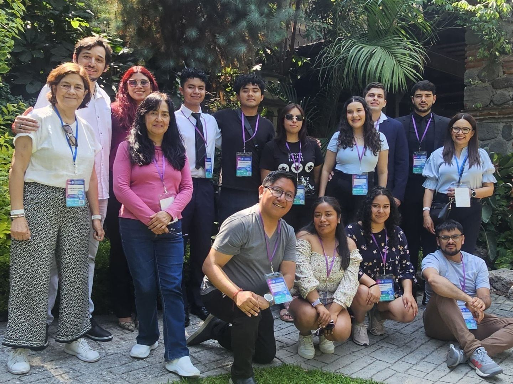

Conferences · AI
COMIA 2027 (19° Congreso Mexicano de Inteligencia Artificial)
- Dates
- –
- Location
- Guadalajara, Mexico
- Format
- In-person
- Category
- AI
- Industry
- Artificial intelligence research
- Organiser
- Sociedad Mexicana de Inteligencia Artificial (SMIA)
- Price
- Official page: SMIA member MXN 750 early bird (to 14 Mar 2027), MXN 1,250 regular; author passes from MXN 5,000.
- Official website
- https://comia.com.mx/2027/
About
Host city Guadalajara per the organiser (SMIA) LinkedIn announcement; search snippets name CUCEI (Universidad de Guadalajara), not confirmed on the official page, so city-level pin. Mexico dates are local (Mexico City time, UTC-6, unless the venue is in another Mexican time zone).
Topics: AI research, machine learning, academic conference.
No organiser attendance figure found on the official pages checked (23 Nov 2026). Ranked by an estimated size tier 'small' (about under 1,000 attendees; our judgement from format, venue and scale, not an official number).
Sources
- Official — https://comia.com.mx/2027/
- Official (organiser LinkedIn post) — https://es.linkedin.com/posts/sociedad-mexicana-de-inteligencia-artificial_m%C3%A9xico-inteligenciaartificial-guadalajara-activity-7467604335875555328-rWxV